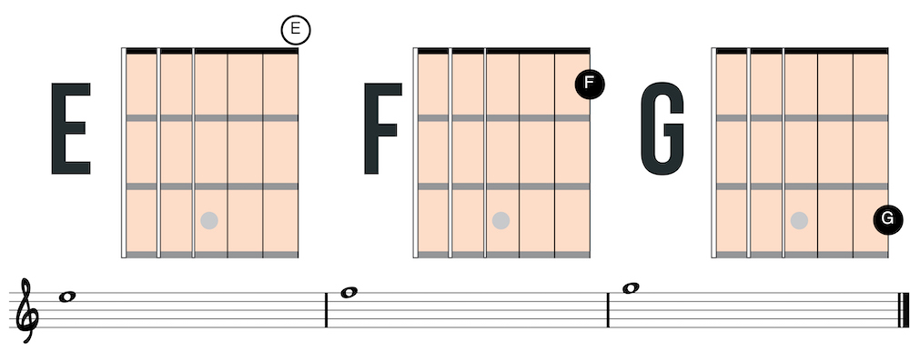
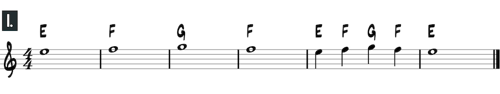
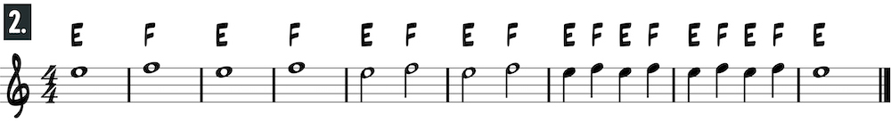
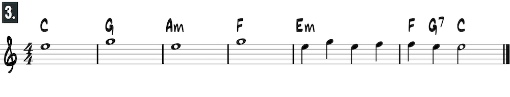
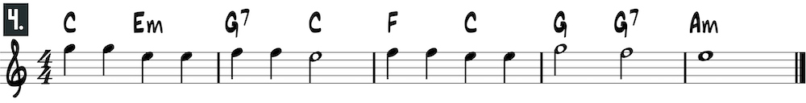

Play F on the first fret with the first finger and G on the third fret with the third finger.
Use these simple melodies to practice reading standard notation on the first string in the open position. (*Note: the letters above the staff are chord changes that can be played alon to these melodies).
   